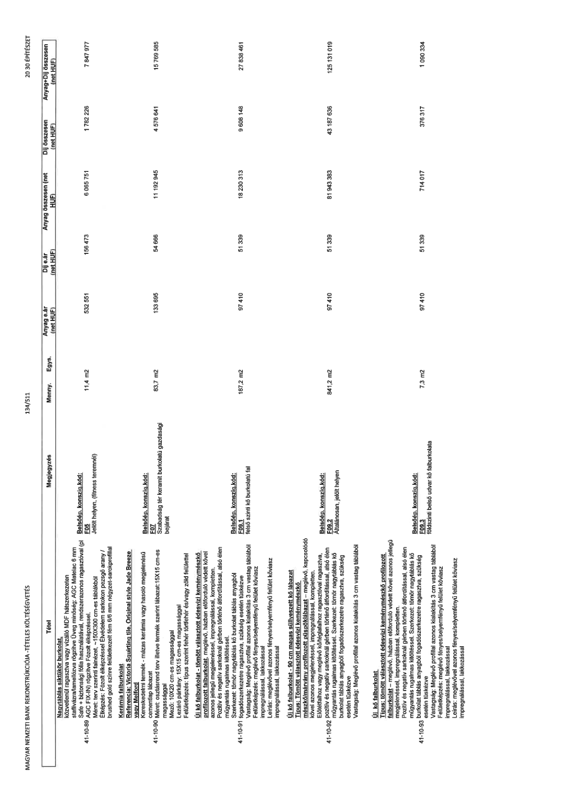

| Tétel | Megjegyzés | Menny. | Egys. | Anyag e.ár (net HUF) | Díj e.ár (net HUF) | Anyag összesen (net HUF) | Díj összesen (net HUF) | Anyag+Díj összesen (net HUF) |
|---|---|---|---|---|---|---|---|---|
| 41-10-89 Nagytáblás síktükör burkolat, közvetlenül ragasztva vagy vízálló MDF hátszerkezeten stativálva/lamellázva rögzítve Üveg minőség: AGC Matelac 6 mm Safe + biztonsági fólia használatával, rendszerazonos ragasztóval (pl AGC FIX-IN) rögzítve fózolt élképzéssel. Méret: terv szerinti falnézet, ~150x300 cm-es táblákból Élképzés: Fózolt élképzéssel Élvédő elem sarkokon pezsgő arany / brushed gold színre színterezett fém 6/6 mm négyzet-sarokprofillal | Belsőép. konszig.kód: F05 Jelölt helyen, (fitness teremnél) | 11,4 | m2 | 532 551 | 156 473 | 6 065 751 | 1 782 226 | 7 847 977 |
| 41-10-90 Kerámia falburkolat Referencia: Victoria Sguirting tile, Original style Jade Breeze vagy Melford kereskedelmi termék - mázas kerámia vagy hasonló megjelenésű cementlap lábazat Méret: méret: osztásrend terv illetve termék lábazat: 15X15 cm-es magassággal Mező: 10X20 cm-es magassággal Lezáró párkány: 15X15 cm-es magassággal Felületképzés: típus szerint fehér törtfehér és/vagy zöld felülettel | Belsőép. konszig.kód: F07 Szabadság tér keramit burkolatú gazdasági bejárat | 83,7 | m2 | 133 695 | 54 666 | 11 192 945 | 4 576 641 | 15 769 585 |
| 41-10-91 Új kő falburkolat - tömött választott édesvízi keménymészkő profilozott falburkolat, meglévő, házban előforduló védett kővel azonos jellegű megjelenéssel, impregnálással, kompletten. Pozitív és negatív sarkoknál gérben történő átfordítással, alsó élen műgyantás rugalmas kitöltéssel. Szerkezet: tömör nagytáblás kő burkolat táblás anyagból fogadószerkezetre ragasztva, szükség esetén tüskézve Vastagság: Meglévő profilal azonos kialakítás 3 cm vastag táblából Felületképzés: meglévő fényes/selyemfényű felület kőviasz impregnálással, lakkozással Leírás: meglévővel azonos fényes/selyemfényű felület kőviasz impregnálással, lakkozással | Belsőép. konszig.kód: F09.1 felső szintű kő burkolatú fal | 187,2 | m2 | 97 410 | 51 339 | 18 230 313 | 9 608 148 | 27 838 461 |
| 41-10-92 Új kő falburkolat - 90 cm magas stílusvezetett kő lábazat Típus: Tömött választott édesvízi keménymészkő mészkő/márvány profilozott püspöklábazat – meglévő, kapcsolódó kővel azonos megjelenéssel, impregnálással, kompletten. Előfalakhoz vagy meglévő kő/téglafalhoz ragasztóval ragasztva, pozitív és negatív sarkoknál gérben történő átfordítással, alsó élen műgyantás rugalmas kitöltéssel. Szerkezet: tömör nagytáblás kő burkolat táblás anyagból fogadószerkezetre ragasztva, szükség esetén tüskézve Vastagság: Meglévő profillal azonos kialakítás 3 cm vastag táblából | Belsőép. konszig.kód: F09.2 Általánosan, jelölt helyen | 841,2 | m2 | 97 410 | 51 339 | 81 943 383 | 43 187 636 | 125 131 019 |
| 41-10-93 Új kő falburkolat Típus: tömött választott édesvízi keménymészkő profilozott falburkolat – meglévő, házban előforduló védett kővel azonos jellegű megjelenéssel, impregnálással, kompletten. Pozitív és negatív sarkoknál gérben történő átfordítással, alsó élen műgyantás rugalmas kitöltéssel. Szerkezet: tömör nagytáblás kő burkolat táblás anyagból fogadószerkezetre ragasztva, szükség esetén tüskézve Vastagság: Meglévő profilal azonos kialakítás 3 cm vastag táblából Felületképzés: meglévő fényes/selyemfényű felület kőviasz impregnálással, lakkozással Leírás: meglévővel azonos fényes/selyemfényű felület kőviasz impregnálással, lakkozással | Belsőép. konszig.kód: F09.3 földszinti belső udvar kő falburkolata | 7,3 | m2 | 97 410 | 51 339 | 714 017 | 376 317 | 1 090 334 |
